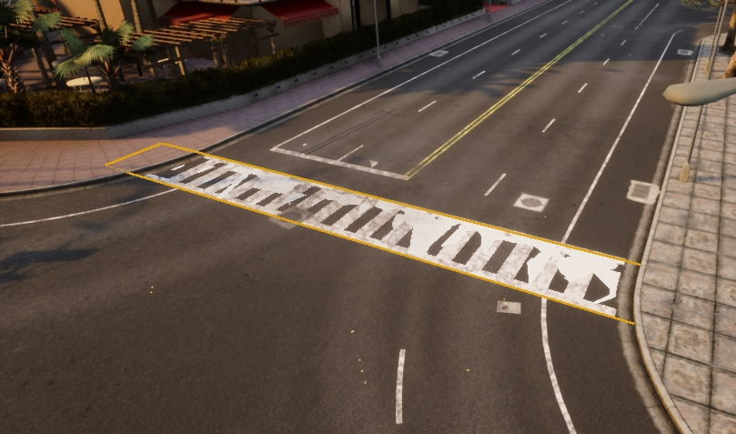
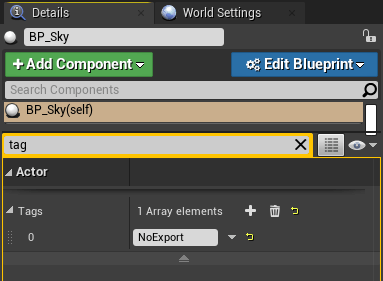

Generate Pedestrian Navigation
To allow pedestrians to navigate a map, you will need to generate a pedestrian navigation file. This guide details what meshes to use and how to generate the file.
- Before you begin
- Pedestrian navigable meshes
- Optional pedestrian navigation options
- Generate the pedestrian navigation
Before you begin
Map customization (adding buildings, painting the road, adding landscape features, etc.) should be completed before generating the pedestrian navigation in order to avoid interference or collisions between the two, resulting in the need to generate the pedestrian navigation a second time.
Pedestrian navigable meshes
Pedestrians can only navigate specific meshes. You need to name the meshes you want to include in pedestrian navigation according to the nomenclature in the table below:
| Type | Name includes | Description |
|---|---|---|
| Ground | Road_Sidewalk or Roads_Sidewalk |
Pedestrians will walk over these meshes freely. |
| Crosswalk | Road_Crosswalk or Roads_Crosswalk |
Pedestrians will walk over these meshes as a second option if no ground is found. |
| Grass | Road_Grass or Roads_Grass |
Pedestrians won't walk on this mesh unless you specify a percentage of them to do so. |
| Road | Road_Road or Roads_Road Road_Curb or Roads_Curb Road_Gutter or Roads_Gutter Road_Marking or Roads_Marking |
Pedestrians will only cross roads through these meshes. |
Optional pedestrian navigation options
The following step is not necessary for generating a pedestrian navigation, but allows you to customize pedestrian activity to a certain extent.
- Generate new crosswalks.
Avoid doing this if the crosswalk is already defined the .xodr file as this will lead to duplication:
- Create a plane mesh that extends a bit over two sidewalks that you want to connect.
- Place the mesh overlapping the ground and disable it's physics and rendering.
- Change the name of the mesh to
Road_CrosswalkorRoads_Crosswalk.

Generate the pedestrian navigation
1. To prevent the map being too large to export, select the BP_Sky object and add a tag NoExport to it. If you have any other particularly large meshes that are not involved in the pedestrian navigation, add the NoExport tag to them as well.

2. Double check your mesh names. Mesh names should start with any of the appropriate formats listed below in order to be recognized as areas where pedestrians can walk. By default, pedestrians will be able to walk over sidewalks, crosswalks, and grass (with minor influence over the rest):
- Sidewalk =
Road_SidewalkorRoads_Sidewalk - Crosswalk =
Road_CrosswalkorRoads_Crosswalk - Grass =
Road_GrassorRoads_Grass

3. Press ctrl + A to select everything and export the map by selecting File -> Carla Exporter. A <mapName>.obj file will be created in Unreal/CarlaUE4/Saved.
4. Move the <mapName>.obj and the <mapName>.xodr to Util/DockerUtils/dist.
5. Run the following command to generate the navigation file:
- Windows
build.bat <mapName> # <mapName> has no extension
- Linux
./build.sh <mapName> # <mapName> has no extension
6. A <mapName>.bin file will be created. This file contains the information for pedestrian navigation on your map. Move this file to the Nav folder of the package that contains the map.
7. Test the pedestrian navigation by starting a simulation and running the example script generate_traffic.py in PythonAPI/examples.
Note
If you need to rebuild the pedestrian navigation after updating the map, ensure to delete the CARLA cache. This is normally found in the home directory in Ubuntu (i.e. cd ~), or in the user directory in Windows (the directory assigned to the environment variable USERPROFILE), remove the folder named carlaCache and all of its contents, it is likely to be large in size.
If you have any questions about the process, then you can ask in the forum.